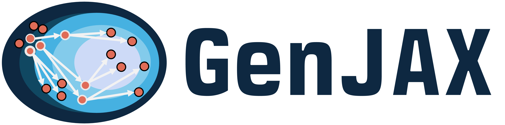

¶

Probabilistic programming with (parallel & differentiable) programmable inference.
🔎 What is GenJAX?¶
Gen is a multi-paradigm (generative, differentiable, incremental) language for probabilistic programming focused on generative functions: computational objects which represent probability measures over structured sample spaces.
GenJAX is an implementation of Gen on top of JAX - exposing the ability to programmatically construct and manipulate generative functions, as well as JIT compile + auto-batch inference computations using generative functions onto GPU devices.
GenJAX is part of a larger ecosystem of probabilistic programming tools based upon Gen. Explore more...
Quickstart¶
To install GenJAX, run
Then install JAX using this guide to choose the command for the architecture you're targeting. To run GenJAX without GPU support:
On a Linux machine with a GPU, run the following command:
Quick example  ¶
¶
The following code snippet defines a generative function called beta_bernoulli that
- takes a shape parameter
beta - uses this to create and draw a value
pfrom a Beta distribution - Flips a coin that returns 1 with probability
p, 0 with probability1-pand returns that value
Then, we create an inference problem (by specifying a posterior target), and utilize sampling
importance resampling to give produce single sample estimator of p.
We can JIT compile that entire process, run it in parallel, etc - which we utilize to produce an estimate for p
over 50 independent trials of SIR (with K = 50 particles).
import jax
import jax.numpy as jnp
import genjax
from genjax import beta, flip, gen, Target, ChoiceMap
from genjax.inference.smc import ImportanceK
# Create a generative model.
@gen
def beta_bernoulli(α, β):
p = beta(α, β) @ "p"
v = flip(p) @ "v"
return v
@jax.jit
def run_inference(obs: bool):
# Create an inference query - a posterior target - by specifying
# the model, arguments to the model, and constraints.
posterior_target = Target(beta_bernoulli, # the model
(2.0, 2.0), # arguments to the model
ChoiceMap.d({"v": obs}), # constraints
)
# Use a library algorithm, or design your own - more on that in the docs!
alg = ImportanceK(posterior_target, k_particles=50)
# Everything is JAX compatible by default.
# JIT, vmap, to your heart's content.
key = jax.random.key(314159)
sub_keys = jax.random.split(key, 50)
_, p_chm = jax.vmap(alg.random_weighted, in_axes=(0, None))(
sub_keys, posterior_target
)
# An estimate of `p` over 50 independent trials of SIR (with K = 50 particles).
return jnp.mean(p_chm["p"])
(run_inference(True), run_inference(False))
References¶
Many bits of knowledge have gone into this project -- you can find many of these bits at the MIT Probabilistic Computing Project page under publications. Here's an abbreviated list of high value references:
- Marco Cusumano-Towner's thesis on Gen
- The main Gen.jl repository
- (Trace types) (Lew et al) trace types
- (RAVI) (Lew et al) Recursive auxiliary-variable inference
- (GenSP) Alex Lew's Gen.jl implementation of GenSP
- (ADEV) (Lew & Huot, et al) Automatic differentiation of expected values of probabilistic programs
JAX influences¶
This project has several JAX-based influences. Here's an abbreviated list:
- This notebook on static dispatch (Dan Piponi)
- Equinox (Patrick Kidger's work on neural networks via callable Pytrees)
- Oryx (interpreters and interpreter design)
Acknowledgements¶
The maintainers of this library would like to acknowledge the JAX and Oryx maintainers for useful discussions and reference code for interpreter-based transformation patterns.